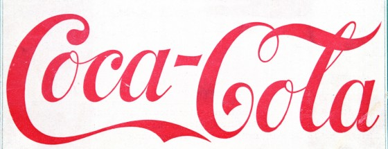

Thousands of real-time marketers at hundreds of leading brands and agencies across 20+ countries use Unmetric to compete and win
“Unmetric has made it simple to get a great pulse on competitive performance in a matter of minutes.”
“Being able to keep tabs on communities and their publishing performance has been faster and easier using Unmetric than other tools. ”
“Unmetric has made it simple to get a great pulse on competitive performance in a matter of minutes.”
“Unmetric has made it simple to get a great pulse on competitive performance in a matter of minutes.”

“Unmetric has made it simple to get a great pulse on competitive performance in a matter of minutes.”
See why people are choosing Unmetric
| Unmetric Analyze | Other social analyze providers | Other command center solutions | Other content creation apps | |
|---|---|---|---|---|
| No Audience Size PenaltiesUnmetric does not charge you extra for your success or if you want to monitor brands with large audiences. | — | — | — | |
| Unrivaled Campaign Intelligence Unmetric uses human analysts to identify and tag campaigns and content in a way no algorithm can. | — | — | — | |
| Promoted Content Detection Unmetric will dissect your competitors' paid content strategies on Facebook and Twitter. | — | — | ||
| 1-Click Automated Reporting & Alerts All your analysis and comparison reports created automatically in Powerpoint and Excel." | — | — | — | |
| Unmetric Track | ||||
| User-generated Social Media Listening Unmetric focuses on brands and competitive intelligence. Our partners can help you with social listening. | — | — | — | |
| Real-time Competitor Content Stream The missing piece in your command center setup, Unmetric Track live streams your competitors' content. | — | — | — | |
| Filtered Feeds For Tent-pole Events Remove the noise and see exactly what brands are posting around big events like the Oscars and Super Bowl. | — | — | — | |
| Track 'Owned Content' Engagement The only app that lets you track competitor content in real time and on the go. | — | — | ||
| Unmetric Discover | ||||
| Social Media Publishing Tools Unmetric focuses on what brands are doing but our partners can help you with your publishing requirements. | — | — | — | |
| Brand Content Search Engine The only search engine focused on brands social media content. | — | — | — | |
| Discover Engaging Trends & Topics Never miss an opportunity to engage with a timely piece of content by staying on top of trends and topics. | — | — | — | |
| Track 'Owned Content' Engagement Unmetric does not charge you extra for your success or if you want to monitor brands with large audiences | — | — | — |
clicking on ".more" toggles class "visible" on ".nav-main-dd"
clicking on ".testimonial-content--2 .testimonial-link" removes class "is-active" on ".testimonial-content--3"
clicking on ".testimonial-content--2 .testimonial-link" adds class "is-active" on ".testimonial-content--2"